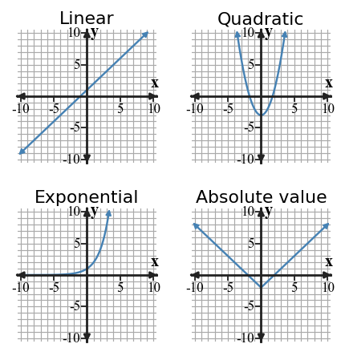
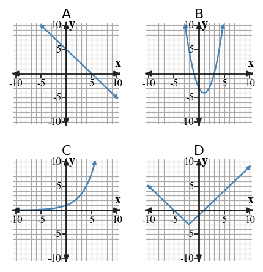
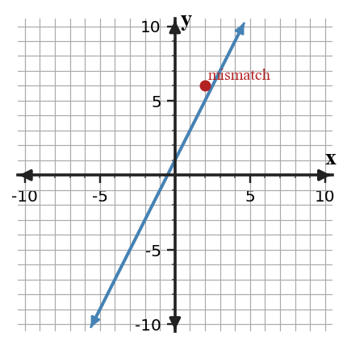

Mathematical idea: Function families can be recognized by evidence from rates, ratios, shape, symmetry, and equation structure.
Today you will distinguish linear, quadratic, exponential, and absolute value relationships using tables, graphs, equations, and contexts. You will practice giving evidence instead of naming a family from appearance alone.
Learning Target: Students will recognize common function families from graphs, tables, equations, and contexts.
I can statements
This is a long-range preview for future lessons. Do not solve it today. Instead, annotate it individually. Circle anything familiar, underline symbols or directions that seem important, and write notes about what information you think will be needed later.
As you annotate, ask yourself: What parts (words, symbols, graphs) do you KNOW? What parts look FAMILIAR? What parts look like jibberish?
A school wants to predict club membership for the next four meetings. Approach A uses a constant increase of $6$ students each meeting from $18$. Approach B multiplies by $1.25$ each meeting from $18$. Recommend one approach for meetings $1$ through $4$ if room capacity is $60$. Support your recommendation with a table and family evidence.
Teacher note: Do not solve the future task. Listen for students naming familiar representations, symbols, and unknown parts.
Directions
Read the introduction aloud with a partner or in a small group. As you read, annotate the text by highlighting important ideas, circling key vocabulary, and writing short notes about connections, questions, or predictions in the margins.
Function families are groups of relationships that share features. An exponential pattern often has outputs that multiply by the same factor when inputs increase by 1. For example, 3, 6, 12, 24 shows repeated multiplication by 2.
Tables can show different kinds of change. Linear tables have constant first differences, while quadratic tables often have constant second differences. Checking changes across several rows gives stronger evidence than looking at one pair of values.
A graph can give a fast first impression, but a first impression is not proof. A curve might look like another family if the viewing window is small or if only a few points are shown. Good reasoning connects the shape to table patterns, equation structure, or context meaning.
The common families in this section are linear, quadratic, exponential, and absolute value. Their features appear across representations: straight-line change, U-shaped second differences, repeated multiplication, and V-shaped distance from a center.
When you critique a family choice, name the evidence you used. You might cite repeated differences, repeated ratios, symmetry, a vertex, or the structure of an equation.
Teacher note: Use this space for student annotations. Prompt partners to underline vocabulary and circle quantities.
Stop and Discuss
Answers: 1. Exponential patterns often multiply by the same factor. 2. Linear tables have constant first differences, while quadratic tables often have constant second differences. 3. A graph window or small sample can be misleading, so shape should be connected to values or structure.
To classify a function family, use evidence from at least one representation instead of relying only on a name or a quick shape match.
| Family | Table evidence | Equation clue |
|---|---|---|
| Linear | constant first differences | $y=mx+b$ |
| Quadratic | constant second differences | $x^2$ term |
| Exponential | constant ratios | variable in exponent |
| Absolute value | outputs mirror around a center | $|x-h|$ structure |

Context: In a situation, the family should also match the story, such as constant increase for linear or repeated percent growth for exponential.
A table has outputs $5,10,20,40$ as inputs increase by 1.
Example 1 answer: Most likely exponential. Outputs multiply by 2 each step. It is not linear because the differences are 5, 10, and 20, not constant.
A table has outputs $2,6,18,54$ as inputs increase by 1.
You Try It 1 answer: Exponential; outputs multiply by 3 each step; not linear because differences are not constant.
Stop and Discuss
Discussion guide: Listen for students connecting the Example and YTI with evidence. Follow-up: ask which representation or step made the answer most certain.
Use the table to identify the likely family and justify your answer.
| $x$ | 0 | 1 | 2 | 3 | 4 |
|---|---|---|---|---|---|
| $y$ | 1 | 4 | 9 | 16 | 25 |
Example 2 answer: First differences: 3, 5, 7, 9. Second differences: 2, 2, 2. Likely quadratic because the second differences are constant.
Use the table to identify the likely family.
| $x$ | 0 | 1 | 2 | 3 | 4 |
|---|---|---|---|---|---|
| $y$ | 4 | 7 | 14 | 25 | 40 |
You Try It 2 answer: First differences: 3, 7, 11, 15. Second differences: 4, 4, 4. Likely quadratic.
Stop and Discuss
Discussion guide: Listen for students connecting the Example and YTI with evidence. Follow-up: ask which representation or step made the answer most certain.
Use the grid to build evidence from graph features, not just labels.

Example 3 answer: Panel B shows a U-shape/symmetry, likely quadratic. Panel C grows faster and faster, suggesting exponential. Answers should connect one panel to visible family evidence such as line, U-shape, repeated growth, or V-shape.
Consider the equations $A:y=2x+6$, $B:y=(x-2)^2+1$, $C:y=3(2)^x$, and $D:y=|x+1|-4$.
You Try It 3 answer: Exponential: C. Absolute value: D. Valid clues include variable in exponent for C, absolute value bars for D, squared term for B, linear form for A.
Stop and Discuss
Discussion guide: Listen for students connecting the Example and YTI with evidence. Follow-up: ask which representation or step made the answer most certain.
A table can look like the right family but still fail to match a specific equation.
For $y=2x+1$, the expected outputs are:
| $x$ | 0 | 1 | 2 | 3 |
|---|---|---|---|---|
| $2x+1$ | 1 | 3 | 5 | 7 |
| Given table | 1 | 3 | 6 | 7 |
The value at $x=2$ is the mismatch. The table might still look almost linear, but it does not represent the exact equation.

The equation $y=3x+2$ and the table are supposed to represent the same relationship.
| $x$ | 0 | 1 | 2 | 3 |
|---|---|---|---|---|
| $y$ | 2 | 5 | 9 | 11 |
Example 4 answer: At $x=2$, equation gives 8. The table gives 9, so that is a mismatch. It mostly looks linear because the intended pattern is close, but the first differences are not all 3.
The equation $y=4x+1$ and the table are supposed to match.
| $x$ | 0 | 1 | 2 | 3 |
|---|---|---|---|---|
| $y$ | 1 | 5 | 8 | 13 |
You Try It 4 answer: Expected at $x=2$ is 9. Table gives 8. It is close to linear but not exact because differences are 4, 3, 5.
Stop and Discuss
Discussion guide: Listen for students connecting the Example and YTI with evidence. Follow-up: ask which representation or step made the answer most certain.
Function families can be recognized by patterns that appear in tables, graphs, equations, and contexts. The goal is to use evidence, not just guess from appearance.
Linear relationships have constant first differences, quadratic relationships often have constant second differences, exponential relationships have repeated ratios, and absolute value relationships have V-shaped distance patterns.
A common error is choosing a family from the graph shape without checking values or equation structure.
Strong understanding means you can identify a likely family, explain the evidence, and critique a mismatch when one representation does not agree with another.
Look back at the future task. Do not solve it yet. Highlight one part that makes more sense now than it did at the beginning. Circle one part that still feels unfamiliar. Write one sentence about what representation you would look at first.
A table has outputs $3,6,12,24$ as inputs increase by $1$. Which family is most likely: linear, quadratic, exponential, or absolute value?
Use the table to identify the likely family. Support your choice with a pattern in the outputs.
| $x$ | 0 | 1 | 2 | 3 | 4 |
|---|---|---|---|---|---|
| $y$ | 2 | 5 | 10 | 17 | 26 |
What is one idea about function families you understand better now than at the start of class? Write at least one complete sentence.
What is one thing about function families you still want to understand or practice? Be specific — name the idea, not just "everything."